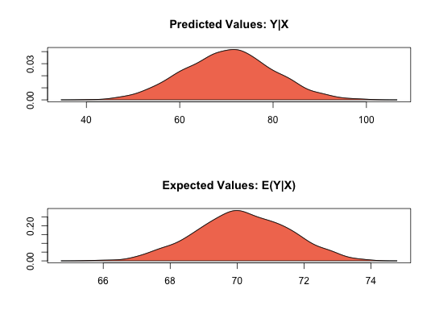

Coerce a non-Zelig fitted model object to a Zelig class object
to_zelig(obj, ...)
| obj | a fitted model object fitted using |
|---|---|
| ... | other arguments passed to |
library(dplyr) lm.out <- lm(Fertility ~ Education, data = swiss) z.out <- to_zelig(lm.out)#> #>#>#> How to cite this model in Zelig: #> R Core Team. 2007. #> ls: Least Squares Regression for Continuous Dependent Variables #> in Christine Choirat, Christopher Gandrud, James Honaker, Kosuke Imai, Gary King, and Olivia Lau, #> "Zelig: Everyone's Statistical Software," http://zeligproject.org/if (require(mitools)) { data(africa, package = "Amelia") a.imp <- Amelia::amelia(x = africa, cs = "country", ts = "year", logs = "gdp_pc")$imputations mod.out <- with(imputationList(a.imp), lm(gdp_pc ~ trade + civlib)) to_zelig(mod.out) }#> -- Imputation 1 -- #> #> 1 2 3 #> #> -- Imputation 2 -- #> #> 1 2 3 #> #> -- Imputation 3 -- #> #> 1 2 3 #> #> -- Imputation 4 -- #> #> 1 2 3 #> #> -- Imputation 5 -- #> #> 1 2 3 #>#> #>#>#> How to cite this model in Zelig: #> R Core Team. 2007. #> ls: Least Squares Regression for Continuous Dependent Variables #> in Christine Choirat, Christopher Gandrud, James Honaker, Kosuke Imai, Gary King, and Olivia Lau, #> "Zelig: Everyone's Statistical Software," http://zeligproject.org/#> Model: Combined Imputations #> #> Estimate Std.Error z value Pr(>|z|) #> (Intercept) 121.03 98.57 1.23 0.21950 #> trade 18.03 1.26 14.33 < 2e-16 #> civlib -632.37 187.02 -3.38 0.00072 #> #> For results from individual imputed datasets, use summary(x, subset = i:j) #> Next step: Use 'setx' method